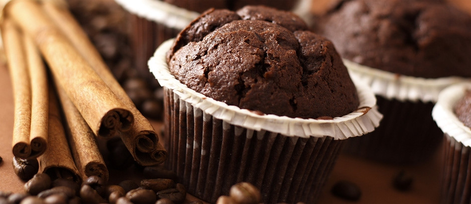

- 
进入咖啡馆选定座位后，不要占据太多空间。如果一个人在咖啡馆办公，不要让你的外套、包或是双脚占据另外一张椅子，要知道这不像在自己家里。我曾看到过一位顾客占据四张椅子。这样做不好，尤其是在咖啡店生意繁忙时。
@知道什么时候离开在咖啡店高峰时期，要意识到是时候离开了。如果你想在咖啡店多呆几个小时，可以选择非高峰时间段（如避免早餐和午餐时间段）。此外，如果你需要接一个通话时间较长的电话，最好在店外通话，以免打扰其他顾客或泄露自己的隐私。
@保持轻声细语无论是打电话还是和朋友聊天，都要保持适当的音量。声音太响不仅会影响他人，还会使人们听到你的谈话。
@保护自己的隐私数据安全是一个值得关注的问题，你不仅需要留意自己在说什么，还要留意电脑频幕上显示的内容。这些都有可能泄露公司、客户或自己的机密信息。
@不要贪婪使用网络虽然很多咖啡店、书店增加了很多网线，每个座位旁有足够的插座。但在人员较多的休息区，网络访问比较有限，有些人也许为了充电已等待很久，他们会向你投来不友好的眼色。所以注意不要下载容量太大的文件（如电影、直播等）。
@买些东西进店后不买东西，会显得不太礼貌。如果自己带入食物或饮料会更糟。如果想在咖啡店内小坐一会儿，那么买点东西是个不错的主意。
@自己清理干净虽然咖啡馆没有要求用完餐自己清理桌子，但这一举动会令店员赞赏你的习惯。